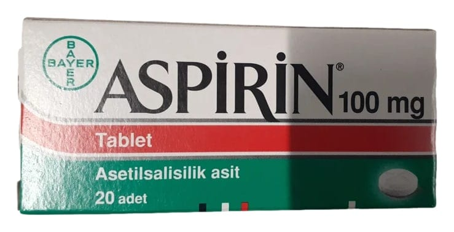

Aspirin 100 mg Tablet, 20 Adet

Ne için kullanılır
KT · Bölüm 1• ASPİRİN, asetilsalisilik asit adlı etkin maddeyi içeren ağrı kesici, ateş düşürücü, yangı (iltihap) giderici ve trombosit olarak adlandırılan pıhtılaşma hücrelerinin kümeleşmesini önleyici etkilere sahip bir ilaçtır. • Her tablet etkin madde olarak 100 mg asetilsalisilik asit içerir. • ASPİRİN, 20 tabletlik ambalajlarda sunulur. Tabletler pembe renkli ve aromatik kokuludur. • Dinlenirken ortaya çıkan/hareketle ilişkisi olmayan göğüs ağrısı (Anstabil anjina pektoris)nda standart tedavinin bir parçası olarak, • Ani kalp krizinde (Akut miyokard infarktüsünde) standart tedavinin bir parçası olarak, • Kalp krizininin tekrar etmesinden (reinfarktüs) korunmada, • Kalp ve damar ameliyatları sonrası damar tıkanmaları ve pıhtıların önlenmesinde, Bu ilacı kullanmaya başlamadan önce bu KULLANMA TALİMATINI dikkatlice okuyunuz; çünkü sizin için önemli bilgiler içermektedir. • Bu kullanma talimatını saklayınız. Daha sonra tekrar okumaya ihtiyaç duyabilirsiniz. • Eğer ilave sorularınız olursa, lütfen doktorunuza veya eczacınıza danışınız. • Bu ilaç kişisel olarak size reçete edilmiştir, başkalarına vermeyiniz. • Bu ilacın kullanımı sırasında, doktora veya hastaneye gittiğinizde doktorunuza bu ilacı kullandığınızı söyleyiniz. • Bu talimatta yazılanlara aynen uyunuz. İlaç hakkında size önerilen dozun dışında yüksek veya düşük doz kullanmayınız.
• Riskli hasta gruplarında geçici felçlerin ve inmelerin önlenmesinde kullanılır. • Sıklıkla beş yaşından küçük çocuklarda ortaya çıkan ve ateş, ciltte döküntü, çilek görünümünde dil, kırmızı ve çatlamış görünümde dudaklar, avuç içi ve ayak tabanının kızarık renkte görünümü ile karakterize bir damar iltihabı hastalığında (Kawasaki hastalığı), o Ateşli dönemde iltihabı (enflamasyonu) azaltmak için, o Kalbi besleyen kan damarı duvarlarında anormal genişleme (anevrizma) durumunda kanın pıhtılaşmasının önlenmesinde kullanılır.